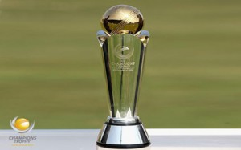

Champions Trophy:

It is an ICC initiative tournament and stands out as the second importance after the great World Cup. It is played by the Top 8 ranked nations. Initially it was called as ICC Knock out tournament and later it got this name. It is also considered as mini world cup. It really has less number of matches. Hence it is one of the best played and viewed ODI series so far. Sadly, it is said that this is the last Champions trophy 2013 which has come to final stages now. ICC will replace the ICC World Test Championship instead of this tournament from next year in its calendar.
| Year | Winner | Runner-up | Final Result | Host |
| 1998 | South Africa | West Indies | South Africa won by 4 wickets | Bangladesh |
| 2000 | New Zealand | India | New Zealand won by 4 wickets | Kenya |
| 2002 | India, Sri-Lanka | – | Sri Lanka and India named joint winners | Sri Lanka |
| 2004 | West Indies | England | West Indies won by 2 wickets | England |
| 2006 | Australia | West Indies | Australia won by 8 wickets | India |
| 2009 | Australia | New Zealand | Australia won by 6 wickets | South Africa |
| 2013 | India | England | India won by 5 runs | England |
| 2017 | TBC | TBC | TBC | England |